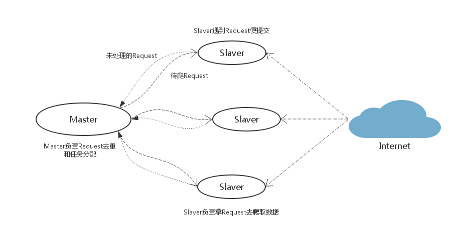

17 Scrapy分布式爬虫
- Scrapy-Redis则是一个基于Redis的Scrapy分布式组件。它利用Redis对用于爬取的请求(Requests)进行存储和调度(Schedule)，并对爬取产生的项目(items)存储以供后续处理使用。
- scrapy-redi重写了scrapy一些比较关键的代码，将scrapy变成一个可以在多个主机上同时运行的分布式爬虫。

17.1 准备
- 既然这么好能实现分布式爬取，那都需要准备什么呢？
- 需要准备的东西比较多，都有：
- scrapy
- scrapy-redis
- redis
- mysql
- python的mysqldb模块
- python的redis模块
- 为什么要有mysql呢？是因为我们打算把收集来的数据存放到mysql中
安装：
$ pip install scrapy-redis $ pip install redisScrapy-Redis的官方网址：https://github.com/rmax/scrapy-redis
17.2 Scrapy-redis各个组件介绍
① connection.py
- 负责根据setting中配置实例化redis连接。被dupefilter和scheduler调用，总之涉及到redis存取的都要使用到这个模块。
② dupefilter.py
- 负责执行requst的去重，实现的很有技巧性，使用redis的set数据结构。
- 但是注意scheduler并不使用其中用于在这个模块中实现的dupefilter键做request的调度，而是使用queue.py模块中实现的queue。
- 当request不重复时，将其存入到queue中，调度时将其弹出。
③ queue.py
其作用如II所述，但是这里实现了三种方式的queue：
FIFO的SpiderQueue，SpiderPriorityQueue，以及LIFI的SpiderStack。默认使用的是第二中，这也就是出现之前文章中所分析情况的原因（链接）。
④ pipelines.py
- 这是是用来实现分布式处理的作用。它将Item存储在redis中以实现分布式处理。
- 另外可以发现，同样是编写pipelines，在这里的编码实现不同于文章（链接：）中所分析的情况，由于在这里需要读取配置，所以就用到了from_crawler()函数。
⑤ scheduler.py
此扩展是对scrapy中自带的scheduler的替代（在settings的SCHEDULER变量中指出），正是利用此扩展实现crawler的分布式调度。其利用的数据结构来自于queue中实现的数据结构。
scrapy-redis所实现的两种分布式：爬虫分布式以及item处理分布式就是由模块scheduler和模块pipelines实现。上述其它模块作为为二者辅助的功能模块。
⑥ spider.py
- 设计的这个spider从redis中读取要爬的url,然后执行爬取，若爬取过程中返回更多的url，那么继续进行直至所有的request完成。之后继续从redis中读取url，循环这个过程。
17.3 具体使用(对Scrapy改造)：
1.首先在settings.py中配置redis（在scrapy-redis 自带的例子中已经配置好）
# 指定使用scrapy-redis的去重
DUPEFILTER_CLASS = 'scrapy_redis.dupefilters.RFPDupeFilter'
# 指定使用scrapy-redis的调度器
SCHEDULER = "scrapy_redis.scheduler.Scheduler"
# 在redis中保持scrapy-redis用到的各个队列，从而允许暂停和暂停后恢复，也就是不清理redis queues
SCHEDULER_PERSIST = True
# 指定排序爬取地址时使用的队列，
# 默认的 按优先级排序(Scrapy默认)，由sorted set实现的一种非FIFO、LIFO方式。
SCHEDULER_QUEUE_CLASS = 'scrapy_redis.queue.SpiderPriorityQueue'
REDIS_URL = None # 一般情况可以省去
REDIS_HOST = '127.0.0.1' # 也可以根据情况改成 localhost
REDIS_PORT = 6379
2.item.py的改造
from scrapy.item import Item, Field
from scrapy.loader import ItemLoader
from scrapy.loader.processors import MapCompose, TakeFirst, Join
class ExampleItem(Item):
name = Field()
description = Field()
link = Field()
crawled = Field()
spider = Field()
url = Field()
class ExampleLoader(ItemLoader):
default_item_class = ExampleItem
default_input_processor = MapCompose(lambda s: s.strip())
default_output_processor = TakeFirst()
description_out = Join()
3.spider的改造。star_turls变成了redis_key从redis中获得request，继承的scrapy.spider变成RedisSpider。
from scrapy_redis.spiders import RedisSpider
class MySpider(RedisSpider):
"""Spider that reads urls from redis queue (myspider:start_urls)."""
name = 'myspider_redis'
redis_key = 'myspider:start_urls'
def __init__(self, *args, **kwargs):
# Dynamically define the allowed domains list.
domain = kwargs.pop('domain', '')
self.allowed_domains = filter(None, domain.split(','))
super(MySpider, self).__init__(*args, **kwargs)
def parse(self, response):
return {
'name': response.css('title::text').extract_first(),
'url': response.url,
}
启动爬虫：
$ scrapy runspider my.py
可以输入多个来观察多进程的效果。。打开了爬虫之后你会发现爬虫处于等待爬取的状态，是因为list此时为空。所以需要在redis控制台中添加启动地址,这样就可以愉快的看到所有的爬虫都动起来啦。
lpush mycrawler:start_urls http://www.***.com
更多关于配置Scrapy框架中配置：settings.py
# 指定使用scrapy-redis的调度器
SCHEDULER = "scrapy_redis.scheduler.Scheduler"
# 指定使用scrapy-redis的去重
DUPEFILTER_CLASS = 'scrapy_redis.dupefilters.RFPDupeFilter'
# 指定排序爬取地址时使用的队列，
# 默认的 按优先级排序(Scrapy默认)，由sorted set实现的一种非FIFO、LIFO方式。
SCHEDULER_QUEUE_CLASS = 'scrapy_redis.queue.SpiderPriorityQueue'
# 可选的 按先进先出排序（FIFO）
# SCHEDULER_QUEUE_CLASS = 'scrapy_redis.queue.SpiderQueue'
# 可选的 按后进先出排序（LIFO）
# SCHEDULER_QUEUE_CLASS = 'scrapy_redis.queue.SpiderStack'
# 在redis中保持scrapy-redis用到的各个队列，从而允许暂停和暂停后恢复，也就是不清理redis queues
SCHEDULER_PERSIST = True
# 只在使用SpiderQueue或者SpiderStack是有效的参数，指定爬虫关闭的最大间隔时间
# SCHEDULER_IDLE_BEFORE_CLOSE = 10
# 通过配置RedisPipeline将item写入key为 spider.name : items 的redis的list中，供后面的分布式处理item
# 这个已经由 scrapy-redis 实现，不需要我们写代码
ITEM_PIPELINES = {
'example.pipelines.ExamplePipeline': 300,
'scrapy_redis.pipelines.RedisPipeline': 400
}
# 指定redis数据库的连接参数
# REDIS_PASS是我自己加上的redis连接密码（默认不做）
REDIS_HOST = '127.0.0.1'
REDIS_PORT = 6379
#REDIS_PASS = 'redisP@ssw0rd'
# LOG等级
LOG_LEVEL = 'DEBUG'
#默认情况下,RFPDupeFilter只记录第一个重复请求。将DUPEFILTER_DEBUG设置为True会记录所有重复的请求。
DUPEFILTER_DEBUG =True
# 覆盖默认请求头，可以自己编写Downloader Middlewares设置代理和UserAgent
DEFAULT_REQUEST_HEADERS = {
'Accept': 'text/html,application/xhtml+xml,application/xml;q=0.9,image/webp,*/*;q=0.8',
'Accept-Language': 'zh-CN,zh;q=0.8',
'Connection': 'keep-alive',
'Accept-Encoding': 'gzip, deflate, sdch'
}
17.4 实战案例：
- 案例：实现主从分布式爬虫，爬取5i5j的楼盘信息
- URL地址：https://fang.5i5j.com/bj/loupan/
- 准备工作：
- 开启redis数据库服务
- 将第二节
Scrapy框架的使用中的案例demo复制过来两份：master(主)、slave(从)

① 编写slave(从)项目代码：
- 查看items.py 保持不变：
import scrapy
class FangItem(scrapy.Item):
# define the fields for your item here like:
title = scrapy.Field()
address = scrapy.Field()
time = scrapy.Field()
clicks = scrapy.Field()
price = scrapy.Field()
- 编辑爬虫文件：fang.py
# -*- coding: utf-8 -*-
import scrapy
from demo.items import FangItem
from scrapy_redis.spiders import RedisSpider
class FangSpider(RedisSpider):
name = 'fang'
#allowed_domains = ['fang.5i5j.com']
#start_urls = ['https://fang.5i5j.com/bj/loupan/']
redis_key = 'fangspider:start_urls'
def __init__(self, *args, **kwargs):
# Dynamically define the allowed domains list.
domain = kwargs.pop('domain', '')
self.allowed_domains = filter(None, domain.split(','))
super(FangSpider, self).__init__(*args, **kwargs)
def parse(self, response):
#print(response.status)
hlist = response.css("div.houseList_list")
for vo in hlist:
item = FangItem()
item['title'] = vo.css("h3.fontS20 a::text").extract_first()
item['address'] = vo.css("span.addressName::text").extract_first()
item['time'] = vo.re("<span>(.*?)开盘</span>")[0]
item['clicks'] = vo.re("<span><i>([0-9]+)</i>浏览</span>")[0]
item['price'] = vo.css("i.fontS24::text").extract_first()
print(item)
yield item
#pass
- 查看pipelines.py保持不变
class DemoPipeline(object):
def process_item(self, item, spider):
print("="*70)
return item
- 编辑配置文件：settings.py配置文件：
...
ITEM_PIPELINES = {
#'demo.pipelines.DemoPipeline': 300,
'scrapy_redis.pipelines.RedisPipeline': 400,
}
...
# 指定使用scrapy-redis的去重
DUPEFILTER_CLASS = 'scrapy_redis.dupefilter.RFPDupeFilter'
# 指定使用scrapy-redis的调度器
SCHEDULER = "scrapy_redis.scheduler.Scheduler"
# 在redis中保持scrapy-redis用到的各个队列，从而允许暂停和暂停后恢复，也就是不清理redis queues
SCHEDULER_PERSIST = True
# 指定排序爬取地址时使用的队列，
# 默认的 按优先级排序(Scrapy默认)，由sorted set实现的一种非FIFO、LIFO方式。
SCHEDULER_QUEUE_CLASS = 'scrapy_redis.queue.SpiderPriorityQueue'
# REDIS_URL = 'redis://localhost:6379' # 一般情况可以省去
REDIS_HOST = 'localhost' # 也可以根据情况改成 localhost
REDIS_PORT = 6379
- 测试：爬取具体房屋信息
# 进入爬虫文件目录找到爬虫文件：
$ scrapy runspider fang.py
另启一个终端，并连接redis数据库
$ redis_cli -p 6379
6379 >lpush fangspider:start_urls https://fang.5i5j.com/bj/loupan/
② 编写master(主)项目代码：
- 编辑items.py 储存url地址：
import scrapy
class MasterItem(scrapy.Item):
# define the fields for your item here like:
url = scrapy.Field()
#pass
- 编辑爬虫文件：fang.py
# -*- coding: utf-8 -*-
from scrapy.spider import CrawlSpider,Rule
from scrapy.linkextractors import LinkExtractor
from demo.items import MasterItem
class FangSpider(CrawlSpider):
name = 'master'
allowed_domains = ['fang.5i5j.com']
start_urls = ['https://fang.5i5j.com/bj/loupan/']
item = MasterItem()
#Rule是在定义抽取链接的规则
rules = (
Rule(LinkExtractor(allow=('https://fang.5i5j.com/bj/loupan/n[0-9]+/',)), callback='parse_item',
follow=True),
)
def parse_item(self,response):
item = self.item
item['url'] = response.url
return item
- 编辑pipelines.py负责存储爬取的url地址到redis中：
import redis,re
class MasterPipeline(object):
def __init__(self,host,port):
#连接redis数据库
self.r = redis.Redis(host=host, port=port, decode_responses=True)
#self.redis_url = 'redis://password:@localhost:6379/'
#self.r = redis.Redis.from_url(self.redis_url,decode_responses=True)
@classmethod
def from_crawler(cls,crawler):
'''注入实例化对象（传入参数）'''
return cls(
host = crawler.settings.get("REDIS_HOST"),
port = crawler.settings.get("REDIS_PORT"),
)
def process_item(self, item, spider):
#使用正则判断url地址是否有效，并写入redis。
if re.search('/bj/loupan/',item['url']):
self.r.lpush('fangspider:start_urls', item['url'])
else:
self.r.lpush('fangspider:no_urls', item['url'])
- 编辑配置文件：settings.py配置文件:
ITEM_PIPELINES = {
'demo.pipelines.MasterPipeline': 300,
#'scrapy_redis.pipelines.RedisPipeline': 400,
}
...
# 指定使用scrapy-redis的去重
DUPEFILTER_CLASS = 'scrapy_redis.dupefilter.RFPDupeFilter'
# 指定使用scrapy-redis的调度器
SCHEDULER = "scrapy_redis.scheduler.Scheduler"
# 在redis中保持scrapy-redis用到的各个队列，从而允许暂停和暂停后恢复，也就是不清理redis queues
SCHEDULER_PERSIST = True
# 指定排序爬取地址时使用的队列，
# 默认的 按优先级排序(Scrapy默认)，由sorted set实现的一种非FIFO、LIFO方式。
SCHEDULER_QUEUE_CLASS = 'scrapy_redis.queue.SpiderPriorityQueue'
# REDIS_URL = 'redis:password//127.0.0.1:6379' # 一般情况可以省去
REDIS_HOST = '127.0.0.1' # 也可以根据情况改成 localhost
REDIS_PORT = 6379
- 测试：爬取更多的url地址：
# 进入爬虫文件目录找到爬虫文件：
$ scrapy runspider fang.py
17.5 处理的Redis里的数据：
网站的数据爬回来了，但是放在Redis里没有处理。之前我们配置文件里面没有定制自己的ITEM_PIPELINES，而是使用了RedisPipeline，所以现在这些数据都被保存在redis的demo:items键中，所以我们需要另外做处理。
在scrapy-youyuan目录下可以看到一个process_items.py文件，这个文件就是scrapy-redis的example提供的从redis读取item进行处理的模版。
假设我们要把demo:items中保存的数据读出来写进MongoDB或者MySQL，那么我们可以自己写一个process_demo_profile.py文件，然后保持后台运行就可以不停地将爬回来的数据入库了。
存入的MongoDB
启动的MongoDB数据库：sudo mongod
执行下面程序：python process_demo_mongodb.py
# process_demo_mongodb.py
import json
import redis
import pymongo
def main():
# 指定Redis数据库信息
rediscli = redis.StrictRedis(host='127.0.0.1', port=6379, db=0)
# 指定MongoDB数据库信息
mongocli = pymongo.MongoClient(host='localhost', port=27017)
# 创建数据库名
db = mongocli['demodb']
# 创建空间
sheet = db['fang']
while True:
# FIFO模式为 blpop，LIFO模式为 brpop，获取键值
source, data = rediscli.blpop(["demo:items"])
item = json.loads(data)
sheet.insert(item)
try:
print u"Processing: %(name)s <%(link)s>" % item
except KeyError:
print u"Error procesing: %r" % item
if __name__ == '__main__':
main()